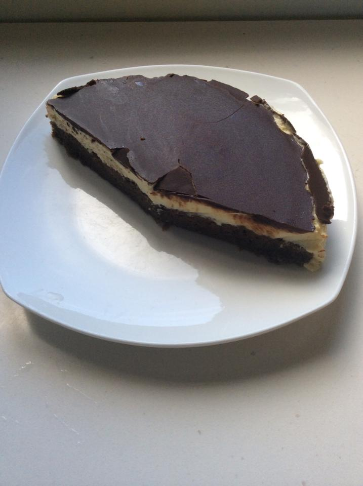

Quark cake

Quark (from Germanic kwark, which is derived from Slavic tvarog) is a type of fresh cheese, sometimes called farmer or curd cheese. It is almost unknown in English speaking countries (and quite hard to find in New Zealand), but common in Central and Eastern European cuisine, where soft and hard variants are known. In the Czech Republic, we add it to almost everything. You can use quark as a base for spreads, with a bit of salt, herbs and thinly cut veggie, to improve texture and flavour profile of your cakes by adding quark to the dough or use quark as a filling. We even have flavoured quark sold in a similar way like yoghurts! Quark has a neutral and slightly acidic flavour and creamy texture. It also contains very little fat, unlike cream cheese with its strong cheesy flavour and almost 50% fat. So if you want to bake with quark, make a cheesecake, use a healthier quark with its superior flavour profile! I am just a big fanboy of quark and can’t live without it.
This recipe combines quark with chocolate in the form of chocolate sponge cake and a layer of thick chocolate on top. It really let the creamy flavour of the quark shine next to the more darker flavour of chocolate.
Ingredients
Sponge
- 4 eggs
- 4 spoons of icing sugar
- 1 spoon of oil
- 4 spoons of flour
- 1 teaspoon of baking powder
- 1 spoon of cocoa
Quark filling
- 750 g quark
- 200 g butter
- 200 g icing sugar
Chocolate icing
- 60 g chocolate
- (optional) 50 g butter
- 1 spoon of milk
Directions
Sponge
- divide eggs into whites and yolks
- mix egg yolks with sugar and beat until white foamy consistency
- mix cocoa, flour and baking powder
- beat egg whites until a thick foam is formed
- carefully add dry mix and beaten egg whites into beaten egg yolks, a spoon of dry ingredients and spoon of egg whites in an alternating manner should do it, you don’t want to add all the dry ingredients at once as this would make the mixture quite dry